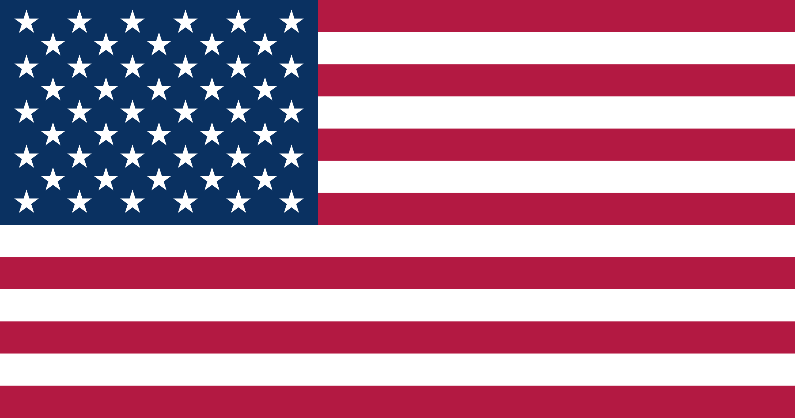

Inglés
Descripción: El inglés es un idioma germánico occidental que se habla principalmente en el Reino Unido, Estados Unidos, Canadá, Australia y otros países. Es una lengua global y se utiliza en negocios, ciencia, tecnología y entretenimiento

Alemán
El alemán es una lengua germánica hablada principalmente en Alemania, Austria y Suiza. Es una lengua importante en filosofía, ciencia, literatura y negocios.

Francés
El francés es una lengua románica hablada principalmente en Francia, Bélgica, Suiza y Canadá. Es una de las lenguas más influyentes en la diplomacia, la cultura y la gastronomía.
Mandarín
El mandarín es un idioma chino de la familia sino-tibetana, hablado principalmente en China, Taiwán y Singapur. Es el idioma más hablado del mundo.
Portugués
El portugués es una lengua romance hablada en Brasil, Portugal, Mozambique, Angola, entre otros. Es el idioma oficial en varias naciones y tiene una rica herencia cultural.